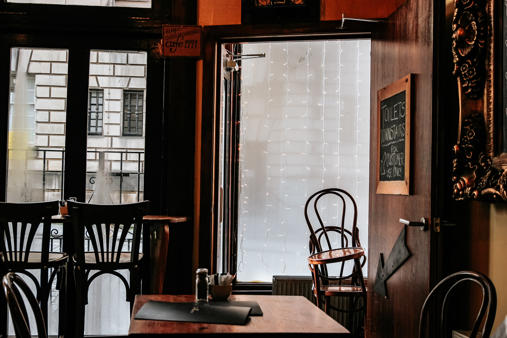

 The Bistro Cafe first opened its doors in November of 1972! Bit and Byte Smith were new to Techieville and discovered an empty building on the corner of 5th and Hypertext Avenue. They always dreamed of opening up their own restaurant. That dream came true in the Fall of 1972 when they purchased the building and began construction on The Bistro Cafe. In November of 1972, they were ready to open their doors. They decided to have a grand opening on Thanksgiving Day and offered a free turkey dinner to all who attended. This became a tradition that is still being followed to this day. Every Thanksgiving Day, The Bistro Cafe opens its doors and serves a free turkey dinner. In 1994, Bit and Byte decided it was time to retire. They turned over the reins of the Cafe to their son, Chip. Chip continues to manage the Cafe today with the help of his wife, Drive. Chip and Drive have added a few of their own special recipes to the menu. But for the most part, the menu hasn't change too much from the original one. The Bistro Cafe went through a major remodel in 2002. A private party room was added which can handle groups up to 40 people. If you would like to plan a private party at The Bistro Cafe, please contact Chip or Drive at the restaurant.